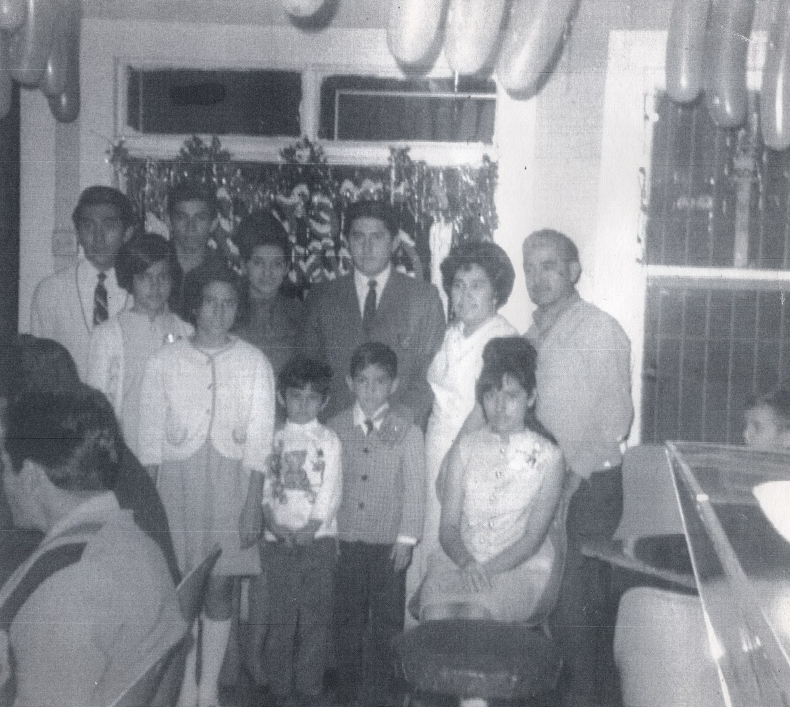

Piedras Negras De Noche has been a beloved fixture in San Antonio's south side community, bringing the authentic flavors of northern Mexico and Texas together on every plate. Our name pays homage to the border city of Piedras Negras, Coahuila — where many of our family recipes originated.
What started as a family dream has grown into a neighborhood institution, known for generous portions, handmade tortillas, and dishes that taste like home. From our signature breakfast tacos served at the crack of dawn to sizzling parrilladas shared with loved ones on Friday nights, every meal tells a story.
Our kitchen runs on tradition. We use the same recipes, the same techniques, and the same love that have defined our food since the very beginning. Whether you're craving a simple bean & cheese taco or our legendary Fajitas Texanas, you'll taste the difference that comes from cooking with heart.

The Rodriguez family — the heart and soul of Piedras Negras De Noche
Rated 4.8/5 on Google Reviews
"The Carne Asada is hands down the best in the city. The atmosphere at night is just unbeatable. Highly recommend!"
"I've been coming here for 10 years. The quality has never dropped. The staff makes you feel like family."
"Great food and huge portions. It gets a little busy on Friday nights, but it is worth the wait."
Have you visited us recently?
Leave a ReviewMore than a restaurant — we're family.
We're a family-owned restaurant, and we treat every guest like family. Our dining room is your dining room.
From our handmade salsas to our slow-cooked meats, we use fresh, quality ingredients in everything we make.
Located on S. Laredo Street, we're proud to serve the community that has supported us for years.
Come visit us — we're open seven days a week!
| Monday | 7:00 AM – 3:00 PM |
|---|---|
| Tuesday | 7:00 AM – 3:00 PM |
| Wednesday | 7:00 AM – 3:00 PM |
| Thursday | 7:00 AM – 3:00 PM |
| Friday | 7:00 AM – 10:00 PM |
| Saturday | 7:00 AM – 10:00 PM |
| Sunday | 7:00 AM – 3:00 PM |
 Piedras Negras
Piedras Negras